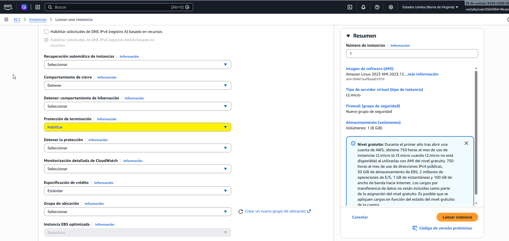
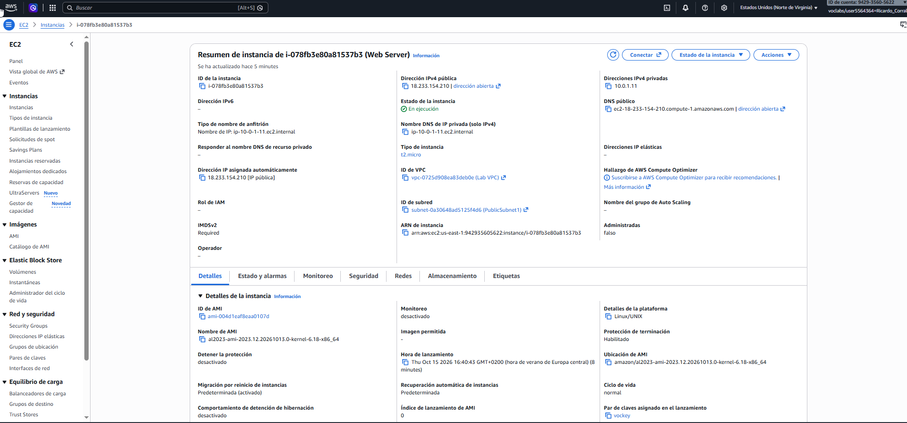
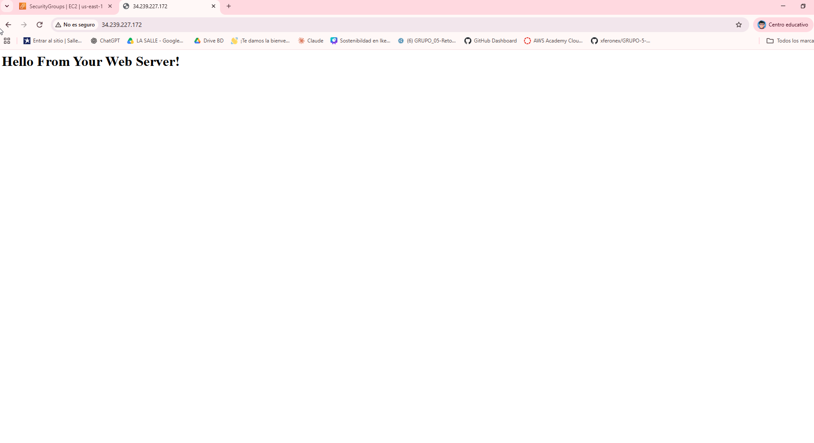
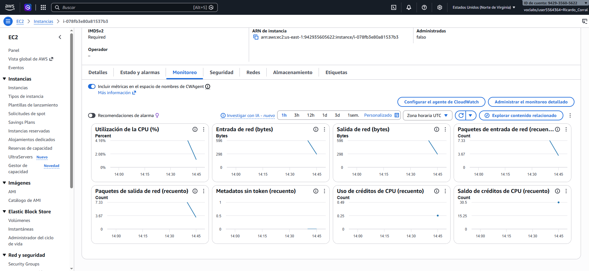
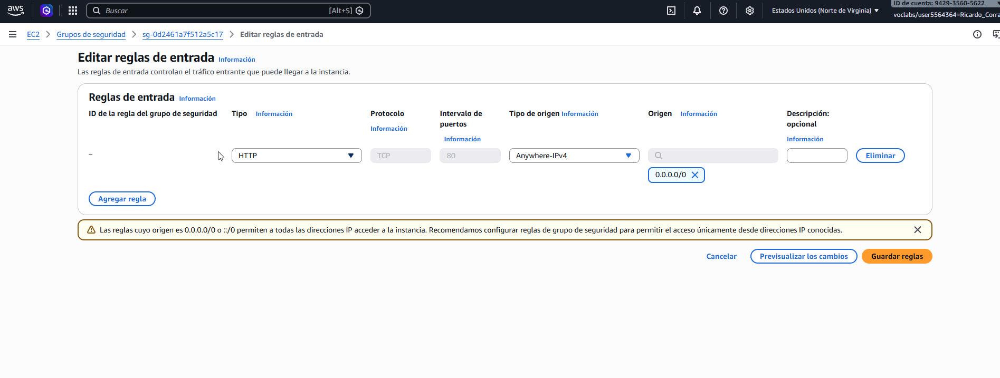
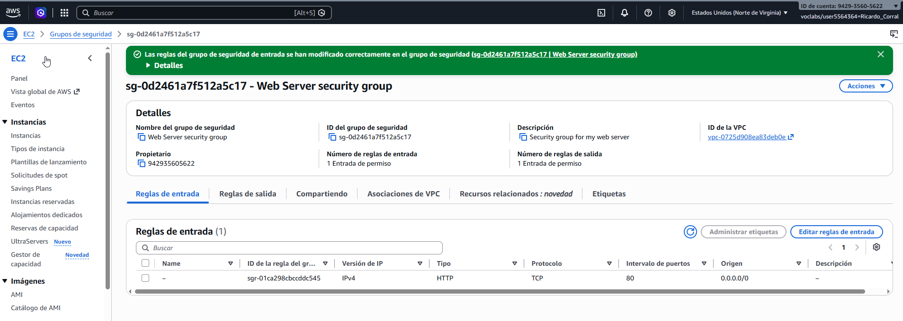
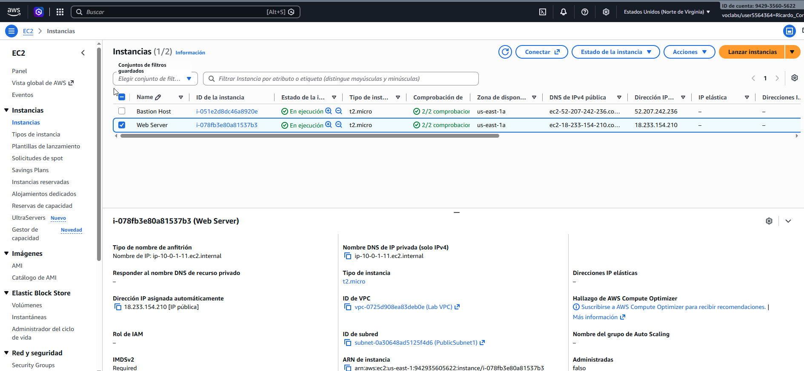
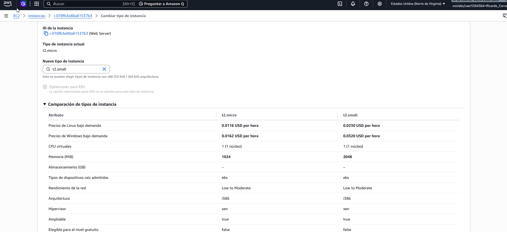
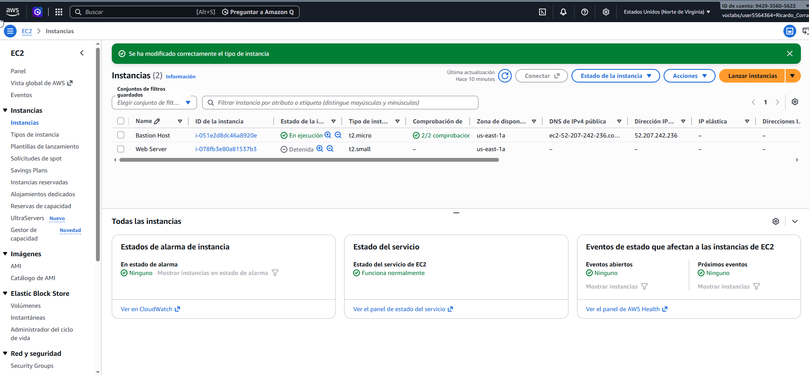

Sección 2 – Primer servidor web en AWS
1. Introducción y objetivo
En esta segunda parte del reto hemos trabajado con Amazon EC2, un servicio de AWS que permite crear servidores virtuales en la nube.
El objetivo de esta práctica era crear un servidor web con Apache y comprobar que podíamos acceder a una página web desde el navegador.
También hemos revisado la monitorización de la instancia, configurado la seguridad para permitir el acceso HTTP, cambiado el tamaño del servidor y comprobado la protección contra terminación.
A continuación, mostramos las capturas de pantalla que hemos guardado durante la práctica para demostrar que hemos completado las diferentes tareas.
2. Evidencias de la práctica
CS01 – Protección contra terminación
En esta primera captura podemos ver que hemos habilitado la protección contra terminación durante la configuración del servidor EC2. Esta opción sirve para evitar que eliminemos la instancia por error.

Después de crear el servidor, comprobamos desde la consola de AWS que la instancia Web Server tenía la protección contra terminación habilitada.

CS02 – Página web desplegada
En esta captura podemos ver que hemos conseguido acceder a nuestro servidor web desde el navegador utilizando su dirección IP pública.
La página muestra el mensaje "Hello From Your Web Server!", lo que nos permite comprobar que Apache se ha instalado correctamente y que el servidor responde a las peticiones HTTP.

CS03 – Monitorización de la instancia EC2
En esta captura podemos ver la pestaña de monitoreo de nuestra instancia EC2. Desde aquí hemos podido consultar diferentes gráficas para comprobar el funcionamiento del servidor.
Entre los datos que aparecen están el porcentaje de uso de la CPU, la entrada y salida de datos por la red y los créditos de CPU. Estas gráficas nos permiten ver la actividad del servidor y controlar los recursos que está utilizando.

CS04 - Grupo de seguridad y acceso HTTP
En esta parte hemos configurado el grupo de seguridad del servidor para permitir las conexiones HTTP. Hemos añadido una regla de entrada con el protocolo TCP, el puerto 80 y el origen 0.0.0.0/0.
En esta primera captura se puede ver cómo hemos configurado la regla de entrada.

Después de guardar los cambios, hemos comprobado que la regla HTTP aparece correctamente en el grupo de seguridad Web Server security group.

CS05 - Reescalado de la instancia EC2
En esta última parte hemos cambiado el tamaño de nuestra instancia EC2. Inicialmente utilizábamos una t2.micro, que dispone de 1 GiB de memoria RAM.
En la primera captura podemos ver el servidor Web Server funcionando con el tamaño inicial t2.micro.

Después hemos seleccionado el tipo t2.small. En la siguiente captura podemos comparar ambos tamaños y comprobar que la memoria RAM aumenta de 1 GiB a 2 GiB.

Finalmente, AWS nos confirma que el cambio se ha realizado correctamente. Podemos ver que nuestra instancia Web Server aparece ahora con el nuevo tamaño t2.small.

3. Conclusión
Con esta práctica hemos aprendido a crear y configurar un servidor web utilizando Amazon EC2. Hemos comprobado que la página creada con Apache funciona y que podemos acceder a ella desde el navegador.
También hemos aprendido a revisar el funcionamiento de la instancia, configurar las reglas de seguridad para permitir el acceso HTTP y cambiar el tamaño del servidor según las necesidades.
En general, esta práctica nos ha servido para entender mejor cómo funciona un servidor en la nube y conocer algunas de las opciones que ofrece AWS para gestionar y escalar servidores en la nube.